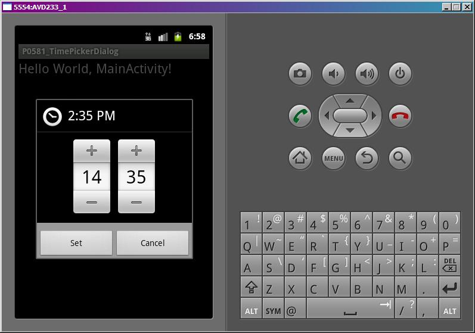
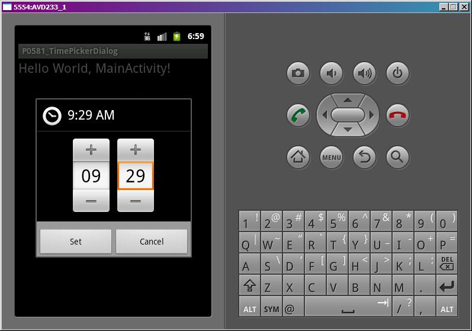
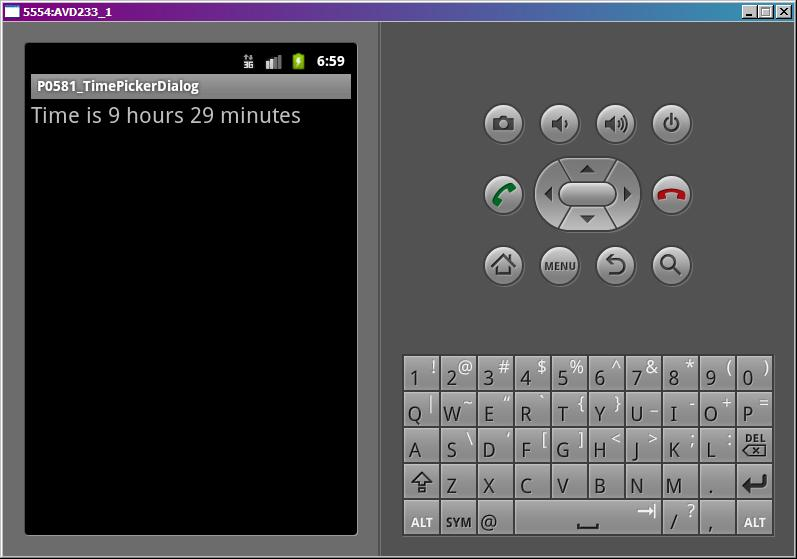

В этом уроке:
- используем TimePickerDialog
Начнем рассматривать новую тему – диалоги. Диалог – небольшое всплывающее окно, которое чаще всего используется для подтверждения каких-либо операций или ввода небольшого количества данных.
Мы рассмотрим стандартные диалоги, предоставляемые системой, и научимся делать свои. На этом уроке рассмотрим TimePickerDialog. Это диалог, который позволяет указать время.
Сделаем простое приложение. На экране будет TextView, на него можно будет нажать и появится диалог для выбора времени. После выбора оно отобразится в TextView.
Создадим проект:
Project name: P0581_TimePickerDialog
Build Target: Android 4.0
Application name: TimePickerDialog
Package name: ru.startandroid.develop.p0581timepickerdialog
Create Activity: MainActivity
Экран main.xml:
<?xml version="1.0" encoding="utf-8"?>
<LinearLayout
xmlns:android="http://schemas.android.com/apk/res/android"
android:layout_width="fill_parent"
android:layout_height="fill_parent"
android:orientation="vertical">
<TextView
android:id="@+id/tvTime"
android:layout_width="fill_parent"
android:layout_height="wrap_content"
android:clickable="true"
android:onClick="onclick"
android:text="@string/hello"
android:textSize="22sp">
</TextView>
</LinearLayout>На экране TextView, для которого включим clickable и назначим метод обработки onclick.
Код MainActivity.java:
package ru.startandroid.develop.p0581timepickerdialog;
import android.app.Activity;
import android.app.Dialog;
import android.app.TimePickerDialog;
import android.app.TimePickerDialog.OnTimeSetListener;
import android.os.Bundle;
import android.view.View;
import android.widget.TextView;
import android.widget.TimePicker;
public class MainActivity extends Activity {
int DIALOG_TIME = 1;
int myHour = 14;
int myMinute = 35;
TextView tvTime;
/** Called when the activity is first created. */
public void onCreate(Bundle savedInstanceState) {
super.onCreate(savedInstanceState);
setContentView(R.layout.main);
tvTime = (TextView) findViewById(R.id.tvTime);
}
public void onclick(View view) {
showDialog(DIALOG_TIME);
}
protected Dialog onCreateDialog(int id) {
if (id == DIALOG_TIME) {
TimePickerDialog tpd = new TimePickerDialog(this, myCallBack, myHour, myMinute, true);
return tpd;
}
return super.onCreateDialog(id);
}
OnTimeSetListener myCallBack = new OnTimeSetListener() {
public void onTimeSet(TimePicker view, int hourOfDay, int minute) {
myHour = hourOfDay;
myMinute = minute;
tvTime.setText("Time is " + myHour + " hours " + myMinute + " minutes");
}
};
}В onCreate находим TextView.
В onClick вызываем метод showDialog и передаем ему ID диалога. Этот метод (showDialog) создает диалог с помощью отдельного метода и показывает его. ID используется для указания, какой именно диалог создавать и показывать.
Метод onCreateDialog – это и есть отдельный метод, который вызывается в showDialog для создания диалога. В этом методе мы смотрим, какой ID пришел на вход, создаем соответствующий диалог и возвращаем его.
В нашем случае мы создаем TimePickerDialog, используя конструктор:
context – контекст
callBack – это обработчик с интерфйесом TimePickerDialog.OnTimeSetListener, метод которого срабатывает при нажатии кнопки ОК на диалоге
hourOfDay – час, который покажет диалог
minute – минута, которую покажет диалог
is24HourView – формат времени 24 часа (иначе AM/PM)
myCallBack – объект, реализующий интерфейс TimePickerDialog.OnTimeSetListener. У него только один метод – onTimeSet, который предоставляет нам TimePicker из диалога, и час и минуту, которые он показывает. Т.е. то, что мы ввели в диалоге.
Эти данные мы пишем в tvTime.
Все сохраним и запустим. Нажмем на TextView. Появился диалог для ввода времени.

Сейчас он показывает 14:35, т.к. мы при создании передали ему значения myHour и myMinute.
Поменяем значения

и нажмем Set.

Текст показал новые значения.
Диалог также можно закрыть кнопкой Cancel или кнопкой Back (назад) на эмуляторе. В этом случае метод обработчика не сработает и текст не обновится.
Это самый простейший диалог. И тут, разумеется, рассмотрены далеко не все возможности. Здесь пока важно понять схему взаимодействия showDialog и onCreateDialog, и наличие обработчика результатов диалога.
Также здесь использовался новый для нас компонент TimePicker. Он несложен и просто позволяет удобно задавать или отображать время.
На следующем уроке сделаем похожий пример, но с датой, для закрепления.